모델 팀(인지·계획·제어)을 위한 기술 보고서
요약 — A1 차량의 by-wire 명령은 메인 PC 한 대가 안전 MCU 없이 보낸다. 모델 팀은 ROS2 토픽 /control/target 하나에 목표 가감속(m/s²)과 앞 타이어각(°)만 발행하고, a1_control_adapter 가 이를 변환표로 가속 %·브레이크 %·핸들각으로 바꿔 공유메모리에 쓰며, 격리 RT 코어 위의 can_guard 가 20 ms 주기로 CAN 0x210 을 보내는 유일한 송신자다. 이 보고서는 그 경로의 구조와 안전 동작, CAN 신호 정의, 그리고 2026-11-04 실차 주행(원격 4.96 km ★, 자율 연속 2.0 km ★)에서 잰 변환표를 정리한다. 결론은 다음과 같다. (1) 조향 부호(+ = 좌)는 확정이다. 그러나 직진 핸들각이 −13.7 핸들 ° 이고 유효 조향비가 7.5 가 아니라 우 10.9·좌 13.6 이어서, 명령한 각의 55–85 % 만 실제로 돈다. (2) 가속은 정지 출발 문턱이 70–80 % 이고 % → m/s² 가 속도에 따라 크게 달라 2차원 표가 필요하다. 100 % 의 가속도는 5–10 km/h 에서 +0.67, 25–35 km/h 에서 +0.09 m/s² 이다. (3) 브레이크 100 % 는 약 3.0 m/s² 로, 현재 표의 4.0 보다 작다. (4) 앱 비상정지가 들어오면 차량은 can_guard 가 아니라 원격 앱 명령을 따른다. 모든 값은 잠정이며, 제안한 표는 track.yaml 에 아직 적용하지 않았다.
BSW(Basic Software) 계층은 상위 제어기와 차량 CAN 사이에서 실시간성·통신·안전을 맡는다(README.md). 차량 쪽 프로토콜의 기준은 업체 DBC 에서 0x200 steer_is_auto 배율 오타 1곳만 고친 DBC/A1_dbc_fixed.dbc 이다. 모델 팀과 BSW 의 경계는 TABLE I 의 토픽들이다. 2026-10-26 에 제어기는 목표 가감속과 타이어각 두 값만 낸다고 정했다(a1_control_adapter/README.md). %·핸들각·auto 비트·클램프·고장 처리는 모두 BSW 가 맡는다.
| 토픽 / 서비스 | 방향 | 타입·필드 | 규칙 |
|---|---|---|---|
/control/target | 모델 → BSW | a1_can_msgs/ControllerOutput: header.stamp, accel_mps2(+가속/−감속), steer_tire_deg(+좌) | 10–100 Hz(어댑터가 50 Hz 로 다시 씀). 150 ms 넘게 끊기면 고장 래치. NaN/inf, |a| > 15 m/s², |δ| > 45° 는 버림. QoS RELIABLE·BEST_EFFORT 모두 가능 |
/control/adapter/arm_steer, arm_long, disarm | 운용자 → 어댑터 | SetBool / Trigger | 신선한 입력이 있을 때만 arm 된다. 래치는 자동으로 풀리지 않고 disarm 으로만 풀린다 |
/control/adapter/status | BSW → 모델 | AdapterStatus, 50 Hz | arm 상태, 입력 나이, 거부, 기록 여부 |
/control/status/control_info, wheel_info | BSW → 모델 | 0x200(핸들각·브레이크 위치·auto), 0x201(후륜 속도·rpm) | 감시 등급이다. 제어 루프에서 직접 구독하지 않는다. 11-04 bag 에서 최대 52 s 지연이 있었다(6장) |
/localization/odom | localization → 모델 | GNSS 100 Hz + LiDAR odometry 보정 | 속도·자세 피드백은 이 토픽이 우선이다(CLAUDE.md 5절 원천 우선순위) |
ros2_ws/src/a1_control_adapter/README.md, ros2_ws/README.md, measurements/2026-11-04_drive_log/README.md 2.1·2.7절.max_steer_tire_deg = 20 은 실제로 낼 수 없다. 최소 회전 반경은 약 12.6 m ★ 이다.표기. CAN 입출력은 핸들 °, 분석·보정·합격 기준은 타이어 ° 로 쓴다. 부호는 좌회전이 + 다. ★ 는 로그에서 계산한 값, 잠정은 1회 측정이거나 조건이 제한된 값이다. 항목 상태는 interface_status.csv 의 4단계(확정 / 잠정·근거 충분 / 잠정·근거 부족 / 미측정)를 따른다. 여기서 “확정”은 표본과 재현성이 충분하다는 뜻이고, 합격 판정은 아니다.
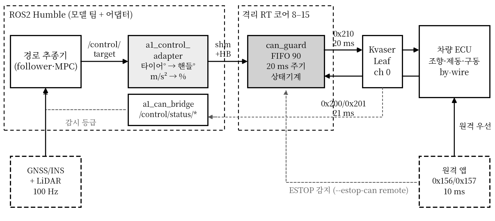
/control/target 만 발행한다. can_guard 는 ROS2 밖에서 격리 코어(CPU 8, SCHED_FIFO 90)에 올라가 0x210 을 보내는 유일한 송신자다. 대회 원격 앱(0x156/0x157)이 enable 되면 차량은 원격을 우선한다. 회색 점선은 감시 등급 피드백과 ESTOP 감지 경로다.a1_control_adapter(ROS2, Python)는 config/track.yaml 의 표로 단위를 바꾼다. 조향은 steer_map(타이어 ° → 핸들 °, steer_sign) 뒤에 120 °/s 레이트 제한과 ±150° 클램프를 건다. 종방향은 데드밴드 ±0.1 m/s² 바깥에서 accel_map 또는 brake_map 중 하나만 쓴다. 결과는 50 Hz 로 can_guard 공유메모리(seqlock 단일 슬롯)에 쓴다. 축별 arm 상태에서 입력이 0.15 s 넘게 끊기거나 불량이면 기록과 하트비트를 멈춘다(래치). 그러면 can_guard 가 HOLDING → STOPPED 로 넘어간다. 인지 프로세스가 아직 없어서 하트비트는 어댑터가 대신 보낸다.
can_guard(표준 라이브러리 + python-can)는 20 ms 마다 최신 명령을 읽어 DBC 범위와 운용 한계(--steer-limit-deg, --brake-limit-pct, --acc-limit-pct)로 클램프한다. 가속과 브레이크가 같이 들어오면 브레이크를 우선한다. 결과는 0x210 으로 인코딩해 Kvaser Leaf 채널 0 으로 보낸다. 시작 전 점검에서 다른 0x210 송신자(원격 유닛 등)가 보이면 시작을 거부한다(종료 코드 3). 0x201 은 직접 읽어 차속 기반 STOPPED 판정에 쓰고, 0x156/0x157 도 직접 읽어 ESTOP 원천으로 쓴다(safety/can_guard/README.md).
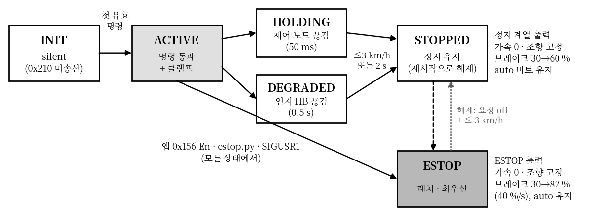
can_guard 상태기계. INIT 은 기본이 silent 여서 첫 유효 명령 전에는 0x210 을 보내지 않는다. 보호 상태(HOLDING/DEGRADED/STOPPED)와 ESTOP 은 auto 비트를 그대로 두고, 가속 0·조향 고정·브레이크 램프를 낸다. 브레이크 %·시간 값은 모두 CLI 기본값이며 잠정이다.vendor_answers.md V21, CLAUDE.md 1.4).paper_data/04 §7). 그래서 종료는 항상 브레이크 100 을 유지한 채 stop.sh 로 한다. silent INIT 은 “첫 명령 전”만 막는다. 어댑터 disarm 이나 lift_cmd auto off 가 auto 000 을 쓰면 그 값이 그대로 나간다(남은 문제).estop.py, ② SIGUSR1, ③ 원격 앱 0x156 EPS/ACC/AEB_En = 1 이거나 0x157 ACC_Cmd ≤ −1.0 이 2프레임 연속인 경우. 11-04 에 앱 ESTOP 감지 지연은 5.8 ms / 18.3 ms 였다(canguard_events.csv). 다만 차량이 앱 원격을 우선했다(6장 ①).| 항목 | 결과 | 조건 · 출처 |
|---|---|---|
| RT 커널 (6.8.1-1059-realtime, 격리 코어 8–15) | ||
| 최악 지연, 30 min | 467 → 27 µs | cyclictest, 기본 RT 튜닝 → 운용 설정(eco 800 + ondemand) · A1_BSW_Figures_Tables.pdf TABLE I·II |
| 400 µs 초과 사건, 8 h | 231 → 26 | cyclictest · 같은 출처 (8 h 최악은 828 → 920 µs 로 줄지 않음) |
| 유휴 전력 | 35.0 → 14.2 W | RAPL · 같은 출처 |
| can_guard SIL (vcan0) | ||
| 송신 루프 자체측정 지연 | 평균 17.0 / 최대 29.1 µs | A-3(격리 + FIFO 90), EAIT 시절 10 ms 주기 · 2026-09-21 브리핑 |
| 8 h 연속 운전 | 2,880,000 주기, 스푸리어스 전이 0, 최대 44.6 µs | 같은 시기 · A1 DBC 코드로는 soak 미실시 |
| P-1 제어 노드 kill -9 | 69 ms 뒤 HOLDING | A1 DBC, 2026-10-07 · 송신 끊김 0 |
| P-2 인지 kill -9 | 주기 20.00 ms 유지, DEGRADED | 같은 날 · 최대 간격 20.45 ms |
| 단위 시험 / 리프트 리허설 | 91 개 / 31 / 31 | ESTOP 시험 포함 · safety/can_guard/README.md |
| 제어기 출력 → 버스 0x210 | 최대 33.6 ms (중앙값 23.7) | SIL, vcan, 비격리, n = 200 · a1_vehicle_characteristics.md §4 |
| 실차 | ||
| 프레임 검증 (10-07 리프트) | 890,611 프레임, DLC·범위 위반 0 | 73 min · paper_data/02 |
| 0x210 송신 (11-04, 11 세션) | 중앙값 19.98–20.00 ms, p99.9 ≤ 22.8 ms | Kvaser 수신 시각 · 40 ms 넘는 공백 1회(bsw3 시작 시 5.6 s, 주행 전) · timing_canguard_tx.csv |
| 자율 5 세션 송신 실패 | tx_fail = 0 (88,509 주기 ★) | INIT→ACTIVE 5회 · canguard_events.csv |
--no-rt(비격리)로 돌렸다(quick_lon.md 3절). 자율 세션은 CPU 8·SCHED_FIFO 90 으로 돌렸다.우리 버스(500 kbit/s classic)에서 제어에 쓰는 ID 는 명령 0x210 하나와 상태 0x200·0x201 두 개다. DBC 에 있는 SYS 계열(0x100, 0x110–0x114, 0x301)은 11-03·11-04 녹화 어디에도 나오지 않았다. DBC 에 없는 0x128·0x202·0x710–0x712 는 차량이 21 ms 로 보내지만 의미는 아직 모른다(TODO-1).
| ID · 신호 | 비트 | 길이 | 형식 · 배율 | 범위 | 비고 |
|---|---|---|---|---|
| 0x210 USER_control_command (우리 → 차량, can_guard 만 송신) | ||||
steer_command | 0 | 16 | int16 × 0.1 = 핸들 ° | ±150 | ×0.1 은 10-07 실차로 확정(raw +80/+100 → +8.8/+11.0°) |
break_command | 16 | 16 | uint16, % | 0–100 | 위치는 82 % 에서 포화(4.3절) |
acc_command | 32 | 8 | uint8, % | 0–100 | 정지 출발 문턱 70–80 %(4.2절) |
steer/break/acc_is_auto_command | 40/41/42 | 1 | 1 = auto | 0/1 | 축별로 따로 수락(약 17 ms). 000 이면 페일세이프 브레이크 해제 |
| 0x200 USER_control_info (차량 → 우리, 21.0 ms) | ||||
steer_postion | 0 | 16 | int16 × 0.1 = 핸들 ° | 관측 −156.8 ~ +154.9 | 원격 끝각 기준(paper_data/04 §2) |
break_postion | 16 | 16 | int16 × 0.1 (0–10) | ≈ 명령 % ÷ 10 | 82 % 이하에서만 맞다. 피드백으로 쓰지 않는다 |
*_is_auto, *_live_counter | 32–34, 40/48/56 | 1 bit / 8 bit | — | 차량 heartbeat 는 없고, 축별 카운터만 있다 |
| 0x201 USER_right_wheel_info (차량 → 우리, 21.0 ms) — 후륜 엔코더, 부호 없음 | ||||
right_speed / left_speed | 0 | 12, 24 | 12 | × 0.1 km/h | 0–409.5 | GNSS 대비 0.958배(÷0.958 보정, 4.4절). 0이 아닌 최솟값 0.1 km/h |
right_rpm / left_rpm | 12 | 12, 36 | 12 | × 1 rpm | 0–4095 | speed ÷ rpm 으로 역산한 바퀴 지름 56.0 cm(11-03) |
reports/2026-11-03_paper_data/01_dbc_syntax_audit.md 3절·라인 대조, safety/can_guard/README.md. 업체 원본 대비 수정은 0x200 steer_is_auto 배율(0.1 → 1) 한 곳이다. 남은 경고: 단위 없음 4개, 0x100 ×1 과 0x210 ×0.1 의 steer_command 배율 불일치, 0x113 신호 이름 wheel_right_size. 철자(postion·break)는 호환을 위해 그대로 둔다.| ID | 송신자 | 중앙값 [ms] | p1–p99 [ms] | 최대 [ms] | 세션 |
|---|---|---|---|---|---|
| 0x200 / 0x201 | 차량 | 20.99 / 20.99 | 20.61–21.38 | 21.72 | 오전 원격 (1,919 s) |
| 0x200 / 0x201 | 차량 | 21.0 | 19.96–22.06 | 28.18 / 31.51 | 자율 bsw5 (467 s) |
| 0x210 | 원격 유닛 | 21.16 | 20.65–22.27 | 23.04 | 오전 원격 |
| 0x210 | can_guard | 19.98 | 2.22–21.14 | 30.6 | 자율 bsw5 (p1 은 늦은 프레임 뒤 바로 보낸 프레임) |
| 0x156 / 0x157 | 원격 앱 | 10.0 | 8.6–11.4 | 21.2 | 자율 bsw5 |
| 0x128, 0x202, 0x710–0x712 | 차량 (DBC 밖) | 21.0 | 19.8–22.2 | ≤ 41.9 | 자율 bsw5 |
timing_can_ids.csv. 버스 부하는 10-07 기준 평균 6.4 %, 최대 20.3 %(재연결 몰림)다(paper_data/README.md). 프레임 1개 전송 시간은 0.22–0.27 ms ★, 0x210 의 최악 중재 대기는 약 1.35 ms ★ 다(a1_vehicle_characteristics.md §2).이 장은 어댑터·follower·can_guard 의 파라미터마다 현재 설정값, 11-04 실측값, 표본, 상태를 함께 적는다. 11-04 자료는 오전 원격 1개, 오후 빠른 시험 9 세션, 자율 5 세션의 Kvaser 원본 전부다. 자율 세션에는 GNSS-RTK(INS) bag 을 함께 썼다. 앱 원격이 켜진 구간(0x156 En = 1, 앞뒤 2 s)은 차량이 0x210 을 따르지 않으므로 뺐다. 항목은 모두 24개이고, 확정 7 · 잠정·근거 충분 8 · 잠정·근거 부족 5 · 미측정 4 다(interface_status.csv, 부록 Fig. 8).
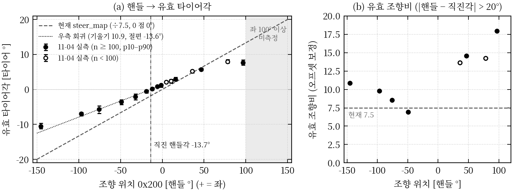
steer_ratio_gnss.csv, steer_ratio_fit.csv.| 항목 | 현재 설정 | 실측 (조건) | 표본 | 상태 · 지금 쓸 값 |
|---|---|---|---|---|
| 부호 | steer_sign +1 | 핸들각과 INS 요레이트의 상관 +0.988 ★ (11-04 주행) | 12,243 점 | 확정 — + = 좌. “부호 미확인” 표시를 해제한다 |
| 직진 0 점 | 타이어 0 = 핸들 0 | 직진 핸들 −13.7°. 핸들 0 이면 타이어 +1.5° 좌. 직선 주행 중 명령 타이어각 −1.63 / −1.79° | |핸들| < 40° 10,252 점 | 잠정·근거 충분 — 01 에서 노면·맵 오프셋과 분리해 확정 |
| 핸들 → 타이어 (우) | ÷ 7.5 (150 ↔ 20°) | 유효 조향비 10.9(회귀). 큰 각에서 8.6–14 | 11,303 점 | 잠정·근거 충분 — 05(저속 우 최대)에서 확인 |
| 핸들 → 타이어 (좌) | ÷ 7.5 | 유효 조향비 13.6. 측정 최대 핸들 +96° | 700 점 | 잠정·근거 부족 — 05 좌(+150) 저속 |
| 최대 타이어각 | follower 20° | 핸들 −145.3° → −10.57° (우). 좌는 미측정 | 114 점 | 잠정·근거 부족 — 우 약 10.6° 로 제한 |
| 불감대 | (없음) | 10-07 리프트 ±1.5° / 11-03 정지 ±2° / 11-04 주행 중 |명령−위치| 4.0°(p50, p75 5.7°)에서 한 번에 움직임, 위치가 멈춰 있는 시간 84–86 % | 자율 2 세션 698 정체 구간 | 잠정·근거 충분 — 주행 오차 예산에는 ±4 핸들 ° ≈ ±0.3–0.4 타이어 ° 를 쓴다 |
| 무반응 시간 | follower 모델 175 ms | 10-07 리프트 167–190 ms / 11-03 정지 0.20 ± 0.01 s / 11-04 계단 107 ms(n = 26) / 연속 추종 130–160 ms(10–40 km/h) | 계단 34, 추종 4 세션 | 확정 — 지연 보상값 150 ms |
| 조향 속도 | 어댑터 120 °/s | 10-07 126 °/s(리프트) / 11-03 150° 계단 210–255 °/s / 11-04 계단 10–90 % 240 °/s, 원격 p99.9 440 °/s | 계단 34 | 확정 — 120 은 능력의 약 절반이다. 07 시험 전까지 유지 |
| 정적 정확도 | — | 명령을 1 s 유지한 뒤 오차 평균 −1.3 ~ +1.1°, p5–p95 대략 ±2°. 명령 0 일 때 위치 평균 −1.3° | 정적 구간 12개 대역 | 참고 |
2026-11-04_drive_log_summary.md 5.0·5.1절, steer_steps.csv(무반응 107 ms 는 양수 26건의 중앙값이다. 명령 시점에 이미 움직이던 음수 8건은 뺐다), steer_tracking.csv, steer_deadband_driving.csv, steer_static.csv. 리프트·정지 값은 a1_vehicle_characteristics.md §3, paper_data/04 §2. 조건이 다른 값이 함께 있으면 11-04 주행 값을 쓴다. 리프트·정지 값은 바퀴 하중과 차속이 없는 조건에서 잰 것이다.측정 대응점에서 좌우 모두 현재 표보다 덜 돈다는 것을 알 수 있다. 우회전은 핸들 −145° 에서 −10.6 타이어 ° 로, 표가 가정한 −19.4° ★ 의 약 55 % 다. 이 결과는 11-04 자율 주행의 두 현상을 함께 설명한다. 첫째, 모든 회차에서 횡편차가 좌측 +0.29 ~ +0.56 m 로 치우쳤다. 둘째, 곡선에서는 경로가 요구한 타이어각보다 크게 명령했다(회귀 명령 = 1.52 × 요구 − 1.77° ★). 헤어핀(경로 최소 반경 10.3 m)에서 −19.2° 로 거의 포화된 것도 같은 원인이다. 좌회전 쪽은 표본이 우회전의 6 % 수준이다. 그리고 핸들 +96° 의 값이 +78° 보다 작게 나와서(저속 6.9 km/h, n = 106) 05 에서 다시 재야 한다.
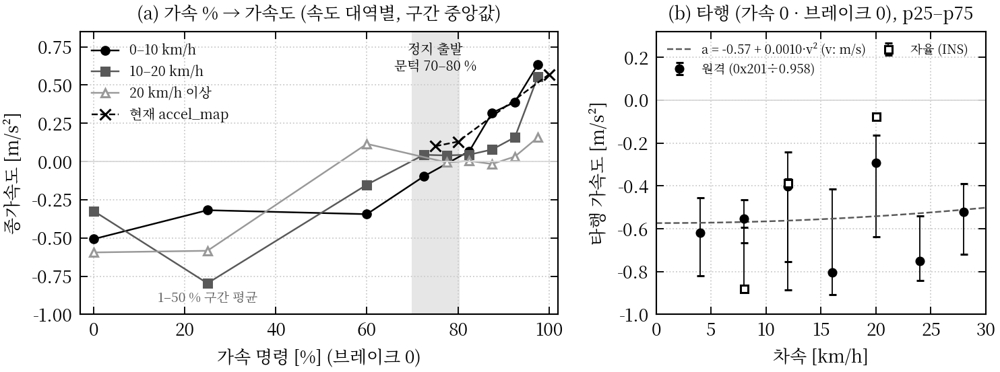
accel_map(×)은 20 km/h 이상에서 실제보다 크게 잡혀 있다. (b) 타행 감속. 전체 최소제곱 맞춤은 a = −0.57 + 0.0010·v² (v: m/s, n = 959)다. 출처: long_accel_map.csv, long_coast.csv.| 가속 % | 0–10 km/h | 10–20 km/h | 20 km/h 이상 | 현재 accel_map |
|---|---|---|---|---|
| 0 (타행) | −0.51 | −0.32 | −0.59 | — (항 없음) |
| 1–50 | −0.32 (n=15) | −0.80 | −0.58 | — |
| 50–70 | −0.34 | −0.15 | +0.12 (n=29) | — |
| 70–75 | −0.10 | +0.04 | — | — |
| 75–80 | — | +0.04 | −0.01 | 75 % → 0.10 |
| 80–85 | +0.07 | +0.04 | +0.00 | 80 % → 0.13 |
| 85–90 | +0.32 | +0.08 | −0.02 | — |
| 90–95 | +0.39 | +0.16 | +0.03 (n=15) | — |
| 95–100 | +0.63 | +0.55 | +0.16 | 100 % → 0.57 |
make_figs.py 가 long_accel_map.csv 의 구간 중앙값을 표본 수(0.05 s 단위)로 가중 평균해 계산했다. 요약 문서 5.2절 표와 같다. n 은 0.05 s 표본 수이고 30 미만만 적었다. 20 km/h 이상 100 % 의 +0.16 은 원격 25–35 km/h(+0.09)와 20–25 km/h(+0.51)가 섞인 값이다.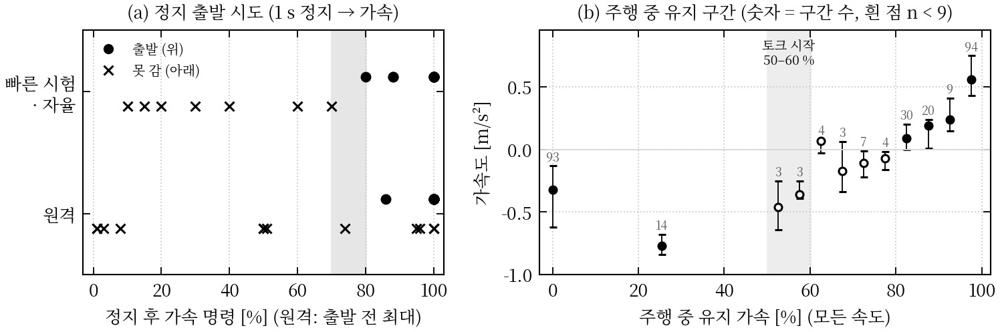
hold_s)이 0.47–1.05 s 이고 고 % 는 그중 일부 순간뿐이었다 — 출발 지연(약 0.5–0.6 s, 4.4절)을 채우기 전에 명령이 내려간 것으로 본다. (b) 주행 중 유지 구간(±4 %, ≥ 0.8 s). 55–60 % 부터 감속이 줄고 60–65 % 에서 약 0 이 된다. 50–80 % 는 구간마다 3–7개뿐이다. 출처: launch_attempts.csv, launch_rolling_bins.csv(11-05, 개발 PC 분석 — 참고값).| 항목 | 값 (조건 · 출처) | 상태 · 지금 쓸 값 |
|---|---|---|
| 정지 출발 문턱 | 10–70 % 는 4–5 s 동안 출발 못 함. 80 % 출발(평지, 각 1회, quick_lon.md). 원격도 75 % 미만으로 출발한 적이 없다 | 잠정·근거 부족 — 70 % 초과 ~ 80 % 이하. 출발에는 ≥ 80 % |
| 토크가 나오기 시작하는 % | 정지 60·70 % 에서 뒷바퀴 1 rpm 움찔(40 % 이하 없음). 주행 중 55–60 % 부터 감속 감소. 타 팀 문의값 48–60 % | 잠정·근거 부족 — 50–60 % |
| 100 % 가속도 | 11-03 원격 저속(≤ 2.9 m/s) +0.82 ± 0.04 (n = 8) / 11-04 빠른 시험 0→3.5 km/h 1.9 s ★ 0.57 / 어댑터 출발 후 평균 0.86·0.88 / 11-04 주행: 5–10 km/h +0.67, 15–20 +0.50, 25–35 +0.09 (원격) | 잠정·근거 충분 — 속도별 값(TABLE VI)을 쓴다. 저속 값들(0.6–0.9)은 서로 크게 어긋나지 않는다 |
| 타행 감속 | 11-03 전진 −0.36 ± 0.07 (저속) / 11-04 −0.3 ~ −0.6, 맞춤 −0.57 + 0.0010·v² | 잠정·근거 충분 — 피드포워드 약 −0.5 m/s². 경사 미보정이므로 평지 왕복으로 확인 |
| 출발 지연 | 11-03 0.62 ± 0.05 s / 11-04 원격 462 ms (n = 32), 자율·어댑터 552 ms (n = 11). 브레이크 해제 직후 625 ms, 오래전 해제 530 ms | 확정 — 브레이크 풀림(무반응 329 ms)이 주 원인. 0.5–0.6 s 로 둔다 |
| 출발 후 유지 | 바퀴가 구르면(≈ 0.6 s) 60 % 이상으로 유지하면 된다. 0.5–8 km/h × 50–80 % 는 표본 없음 | 미측정 — 03(a) 내림 시험 |
drive_log_summary.md 5.0·5.2·6.1절, quick_lon.md, paper_data/04 §4, long_launch.csv.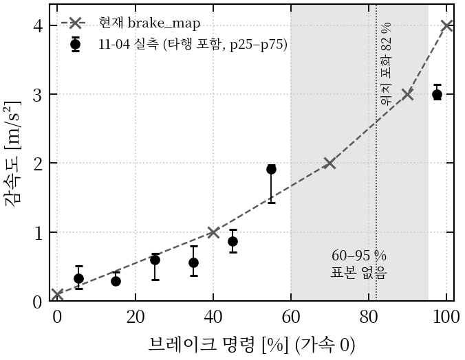
long_brake_map.csv(“all”).| 항목 | 현재 설정 | 실측 (조건 · 출처) | 상태 · 지금 쓸 값 |
|---|---|---|---|
| % → m/s² (0–60 %) | 0 → 0.1, 40 → 1.0 | 1–20 % 0.25–0.34 / 20–40 % 0.56–0.60 / 40–50 % 0.87 / 50–60 % 1.91 (11-04 자율·빠른 시험) | 잠정·근거 충분 — 04(a)에서 재확인 |
| % → m/s² (60–95 %) | 70 → 2.0, 90 → 3.0 | 원격은 대부분 100 % 만 썼고, 자율은 55 % 다음이 100 %(정지 유지)여서 표본이 없다 | 미측정 — 04(a) 60/70/80/90 % 계단 |
| 100 % | 4.0 m/s² (follower hold_decel 도 4.0) | 10-08 타 팀 이미지 3.97 / 4.11 (순간) / 11-03 저속 a = −0.64·v − 0.99 (1.2–2.7 m/s) / 11-04 2.99–3.07 (2–35 km/h) | 잠정·근거 충분 — 3.0. 10-08 값은 이미지 판독 순간값이라 쓰지 않는다 |
| 걸기 지연 | 10-07 리프트 56–112 ms | 11-04 무반응 109 ms (n = 12), 90 % 593 ms (n = 5) | 확정 |
| 풀기 지연 | — | 11-04 무반응 329 ms (n = 24), 90 % 777 ms. 걸기보다 약 3배 느리다 | 확정 — 가속 전환 시 0.5 s 이상 겹침을 예상한다 |
| 위치 피드백 0x200 | 명령 ÷ 10 | 82 % 이하에서는 맞다(55 % → 5.4). 정지 100 % 포화값이 세션마다 5.0–8.3 이다(10-07 리프트는 10.0). 원격 주행 중 최대 6.8 | 확정 — 제동력 판단에 쓰지 않는다. 정지 확인은 차속으로 한다 |
long_brake_map.csv, brake_steps.csv, brake_position_by_session.csv, a1_vehicle_characteristics.md §3·§5, paper_data/04 §3. 1.3절의 원격 82–100 % 구간 중앙값 −2.70 m/s²(p10 −3.12, 505 구간)는 0.3 s 지연 정렬만 한 값이다. 3.0 은 0.5 s 유지 조건의 값이다.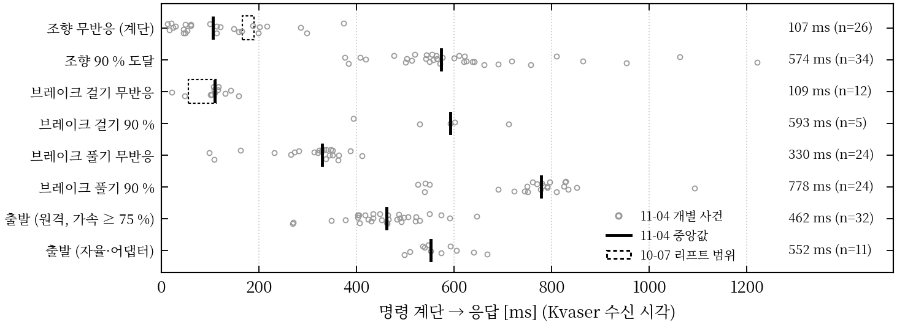
steer_steps.csv, brake_steps.csv, long_launch.csv.| 항목 | 현재 설정 | 실측 | 상태 · 조치 |
|---|---|---|---|
| 0x201 속도 배율 | 1.0 | GNSS 대비 0.958 (2–25 km/h 일정, 5 세션). 좌우 개별 0.89–0.99 | 확정 — 속도·거리 ÷ 0.958. 바퀴 지름 설정 확인(V10) |
| 0x210 송신 주기 | 20 ms | 중앙값 19.98 ms, p99.9 22.8 ms | 확정 |
| 어댑터 stale | 0.15 s | /control/target 최대 공백 약 340 ms(세션마다 1–4회). bsw3 에서 입력 나이 406 ms 로 stale 2회 | 잠정·근거 충분 — 원인은 같은 시각의 odom 공백 |
| follower odom 타임아웃 | 0.2 s | /localization/odom 최대 공백 336–348 ms | 원인 확인 전에는 값을 늘리지 않는다 |
| 종단 지연 예산 (움직임 시작까지): 제어기 → 0x210 ≤ 33.6 ms(SIL) + 버스 ≤ 1.4 ms + 차량 수락 ≤ 22 ms + 액추에이터 무반응(조향 107–150 ms, 브레이크 걸기 109 ms, 구동 출발 462–552 ms) ★ ≈ 조향 0.2 s, 브레이크 0.17 s, 출발 0.6 s. 50 km/h 에서 0.2 s 는 약 2.8 m ★ 다. | |||
wheel_speed_vs_gnss.csv, timing_canguard_tx.csv, timing_ros.csv, a1_vehicle_characteristics.md §1·§4.아래 표는 근거만 정리한 것이다. track.yaml 과 follower 설정은 바꾸지 않았다. 바꾸려면 사용자 승인이 필요하고(CLAUDE.md 1.2), 바꾼 뒤에는 대회 PC 에서 SIL 을 다시 통과해야 한다. “적용 시점”은 그 값을 확정하는 시험이다.
| 파라미터 (파일) | 현재 | 제안 (잠정) | 근거 상태 | 적용 시점 |
|---|---|---|---|---|
steer_map (track.yaml) | tire [−20, 0, 20] wheel [−150, 0, 150] | tire [−10.6, −6.9, −5.7, −3.6, −2.1, 0, +2.9, +5.7, +8.0] wheel [−145, −97, −76, −49, −32, −13.7, +16, +47, +78] (측정 대응점: 우 n ≥ 100, 좌 +78 은 n = 88. 0 점은 회귀 절편) | 우 충분 / 좌 부족 | 01 → 05 → 07 |
follower max_steer_tire_deg | 20 | 우 10.6 (좌는 05 전까지 8.0, 실측 최대) | 부족 | 05 |
| follower 조향 지연 보상 | 175 ms | 150 ms | 확정 | 즉시 가능 |
steer_rate_limit_deg_s | 120 | 유지 (능력 240 °/s) | 확정 | 07 뒤 재검토 |
accel_map | 1차원 [0.10, 0.13, 0.57] ↔ [75, 80, 100] % | 속도 × % 2차원 표(TABLE VI). 정지 출발은 ≥ 80 %, 구르기 시작하면 ≥ 60 % | 80–100 % 충분, 50–80 % 미측정 | 03(a) |
| 타행 피드포워드 | 없음 | 가속 0 일 때 약 −0.5 m/s² 를 감속 능력으로 반영. 0.5 m/s² 미만의 감속은 브레이크 대신 가속 0 으로 처리 | 충분 | 03(a)·04(a) |
long_deadband_mps2 | 0.1 | 데드밴드 + 가속↔제동 히스테리시스 + 최소 유지 시간 (값은 미정) | 문제 확정(216 회/분) | 02 SIL 후 실차 |
follower a_max_mps2 | +0.6 | 20 km/h 이상에서 ≤ +0.3 | 충분 | 즉시 가능 |
brake_map | [0.1, 1, 2, 3, 4] ↔ [0, 40, 70, 90, 100] % | 40 % 점 유지, 55 % ≈ 1.9, 100 % = 3.0, 60–95 % 는 04(a) 뒤 채움 | 0–60 % 충분, 60–95 % 미측정 | 04(a) |
follower hold_decel_mps2 | 4.0 | 3.0 (brake_map 100 % 를 따라감) | 충분 | brake_map 과 함께 |
| 0x201 속도 배율 | 1.0 | ÷ 0.958 | 확정 | 즉시 가능 |
drive_log_summary.md 3장(다음 할 일) 2·3·5·7번. 핸들 150° 를 넘는 좌회전 요구(약 +8 타이어 ° 초과)는 05 전까지 실측 근거가 없다. 제안 표에서는 핸들 +150° 에서 포화로 둔다.| 날짜 · 표기 | 조건 | 원본 · 규모 | 이 보고서에서 쓴 곳 |
|---|---|---|---|
| 10-07 [L] | 리프트, 우리 송신(비격리) | Kvaser 2 파일 890,611 프레임, 10:25:09–11:38:06 | 0x210 배율, auto 수락, 리프트 지연·불감대 |
| 10-08 [C] | 타 팀 주행 이미지·GNSS bag | 이미지 판독, bag 2개(CAN 없음) | 조향비 7.5 와 brake_map 의 초기 근거(참고만) |
| 11-03 [R] | 원격 0/100 % 저속 주행 ≤ 2.9 m/s | 442,631 프레임, 15:56:09–16:33:07 | 100 % 가속·타행·출발 지연(저속) |
| 11-03 [S] | 정지 차량, can_guard 0x210 (21:41~) | raw/l4h | auto 000 동작, 0x210 끊김 0.4 s, 82 % 포화, 정지 조향 응답 |
| 11-04 오전 | 원격 주행 (외곽 랩 2회) | 1,113,179 프레임, 11:40:47–12:12:46, 4.96 km ★, 최고 31.6 km/h | 가감속 분포, 브레이크 100 %, 조향 계단 |
| 11-04 오후 | 빠른 시험(lift_cmd·어댑터), 평지·저속 | 9 세션 (QUICK-*, ADAPTER-*) | 출발 문턱, 어댑터 경로, 정지 브레이크 |
| 11-04 오후 | 자율(follower → 어댑터 → can_guard), RTK fix | 5 세션 bsw–bsw5, 16:40–17:12. 연속 자율 2.0 km ★ | 조향비·오프셋(GNSS), 추종 지연, 떨림, ESTOP |
paper_data/02·04, measurements/2026-11-03_signal_audit/results.md, measurements/2026-11-04_signal_audit/{results.md, quick_lon.md}, drive_log_summary.md 0–2장. 11-04 CAN 원본(zstd, 30개)은 measurements/2026-11-04_drive_log/raw_can/ 에 있다.계산 원칙. (1) 시각은 전부 Kvaser 수신 시각을 썼다. bag 의 /control/status/* 는 최대 52 s 늦게 기록돼 쓰지 않았다. (2) 앱 원격 enable 구간은 뺐다. (3) 유효 타이어각의 기준은 GNSS-RTK(INS) 요레이트·속도다. 0x201 은 GNSS 가 없는 원격·빠른 시험에서만 ÷ 0.958 로 보정해 썼고, 부호가 없으므로 전진 구간만 썼다. (4) 경사·바람은 보정하지 않았다. (5) 11-05 추가 분석(출발 민감도, 인터페이스 완성도)은 개발 PC 에서 했으므로 CLAUDE.md 규칙에 따라 참고값으로 둔다. (6) 모든 값은 판정이 아니다. 합격 판정은 각 테스트의 goal.md 기준으로 따로 한다.
| # | 문제 | 관측 (출처) | 영향 · 임시 대응 |
|---|---|---|---|
| ① | 앱 비상정지 때 원격이 우선된다 | 17:00:43, 14.2 km/h 에서 ESTOP 진입. 감지 5.8 ms, 첫 송신 브레이크 30.8 %. 그러나 차량은 앱 명령을 따랐다. 조향 −53 → +7.6° 로 0.25 s 만에 복귀, 브레이크 위치 4.2 → 0.3. 앱 ACC_Cmd −3.0 을 1.5 s 보낸 뒤 14.5 → 0 km/h 까지 약 5 s(평균 0.8 m/s² ★) (요약 2.6) | 실제 제동력은 앱 ACC_Cmd 가 정한다. 곡선 중 비상정지하면 조향이 0° 로 돌아가 경로를 벗어날 수 있다. 00 SAF-ESTOP 기준을 다시 정해야 한다 |
| ② | 위치 추정 공백·계단 | /localization/odom 공백 336–348 ms(세션당 1–4회). LO 보정 계단 0.57–1.00 m(재동기 9회, 점프 경고 27회) (요약 2.5) | follower 0.2 s 타임아웃을 넘는다(이번에는 정지로 이어지지 않음). 횡편차 튐의 일부일 수 있다. localization 팀에 전달 |
| ③ | bag 의 CAN 토픽 지연 | can_raw_bridge 504 프레임/s(버스 약 580/s)로 큐가 쌓임. 수신 − 헤더 시각 최대 52.1 s (요약 2.7) | 제어에는 영향이 없다. bag 시각으로 분석하면 수십 초 어긋난다 → 헤더 stamp 또는 candump 를 쓴다 |
| ④ | 종방향 명령 떨림 | 랩 2회차 가속·제동·무명령 전환 1,520 회(216 회/분), 약 0.3 s 주기 (요약 2.4) | 마모·승차감·속도 출렁임. 원인은 75 % 문턱 + 타행 미반영 + 데드밴드 경계로 추정. TABLE X 제안 |
| ⑤ | 좌측 쏠림과 조향 이득 부족 | 횡편차 평균 +0.29 – +0.56 m(모든 회차), p95 0.53–0.56 m, 최대 1.08 m(헤어핀) (요약 2.2–2.3) | 4.1절. pure pursuit 는 적분이 없어 정상상태 오차가 남는다. 01 에서 맵 오프셋과 분리 |
| ⑥ | U턴 계획과 실측의 충돌 | uturn.yaml 은 acc: 6 %, accmax: 15. 방위 추정은 조향비 7.5 를 쓴다. 실제 요레이트는 추정의 약 0.5배(추정 180° → 실제 약 90–95° ★). 최소 반경 약 12.6 m ★ (요약 6.3) | 출발 문턱 아래라 출발하지 못한다. “두 차선 약 13 m 간격” U턴은 실측상 불가능하다 → 01·02 의 U턴 절차를 재검토 |
| ⑦ | 0x210 끊김 동작 미확정 | 10-07 타임아웃 없음 vs 11-03 0.4 s 뒤 브레이크 8.2 | TODO-2. 차량 타임아웃에 기대지 않는다 |
| ⑧ | auto 000 경로 | 어댑터 disarm·lift_cmd auto off 가 auto 000 을 쓰면 ACTIVE 에서 그대로 나간다 | 페일세이프 브레이크가 풀린다. 종료 절차로 막고 있으며, 코드 차원의 방지는 아직 없다 |
| ⑨ | bringup RT 실패 · SIL E2 | setsid 안의 sudo chrt 가 비밀번호를 다시 요구해 can_guard 가 뜨지 않음(오후 빠른 시험은 --no-rt). --rt 에서 SIGUSR1 시험 E2 FAIL (quick_lon.md 3절) | 격리 실행이 보장되지 않는다. 공유메모리·앱 ESTOP 경로는 PASS |
| ⑩ | 측정 공백 | 가속 저속 × 50–80 %, 브레이크 60–95 %, 좌 100° 이상, 30 km/h 이상, 경사 (요약 6.2) | 해당 변환표 칸은 외삽하지 않는다 |
사용자가 고른 세 갈래로 정리한다. 실차·CAN 에 닿는 실행과 track.yaml 변경은 모두 승인을 받고 한다.
| 갈래 | 할 일 | 완료 조건 |
|---|---|---|
| (1) 앱 비상정지 재정의 | 업체·대회측 확인: 앱 정지 버튼의 실제 프레임, ACC_Cmd −3 을 정지까지 유지하는지, 원격 enable 중에 0x210 이 의미가 있는지. 00 SAF-ESTOP 의 원천과 기준(감지 ≤ 100 ms, 제동 시작 ≤ 200 ms)을 원격 우선 전제로 다시 쓴다. 물리 E-stop 은 계속 병행한다 | 00 goal.md 갱신 → SIL → 저속(≤ 10 km/h) 실차 |
| (2) 인터페이스 개선 시험 | 03(a): 정지 계단 50–75 %(5 % 간격) × 10 s, 100 % 1.0/1.5/2.0 s → 50–70 % 내림 × 8 s, 평지 왕복(경사 상쇄). 04(a): 60/70/80/90 % 계단. 05: 좌(+150)·우(−150) 저속 + GNSS. 01: 직선 50 m 오프셋과 실제 조향 위치(불감대) 기록 | TABLE X 의 “미측정·부족” 칸을 채운 뒤 track.yaml 갱신(승인) → 대회 PC SIL 재통과 |
| (3) 도구 정비 | can_raw_bridge 지연(C++ 화 또는 0x200/0x201/0x210 만 발행), 분석 도구는 헤더 stamp 사용. bringup sudo/chrt(sudoers NOPASSWD 또는 sudo 를 setsid 밖으로). SIL E2 신호 대상 수정. A-3 지연 재측정과 새 코드 8 h soak | bag 지연 < 1 s, bringup.sh RT 기동, run_sil_check.sh --rt 전부 PASS |
drive_log_summary.md 3장·6.1절, quick_lon.md 3절, a1_todo.md, safety/can_guard/README.md “다음 단계”.| 필드 | 물리 → raw | BSW 처리 |
|---|---|---|
steer_command | 핸들 ° × 10 (예: −49.8° → −498 ★) | 어댑터: 타이어 ° → steer_map → 120 °/s 제한 → ±150°. can_guard: --steer-limit-deg 클램프. 보호 상태·ESTOP 에서는 진입 순간 값으로 고정 |
break_command | % 그대로 | 어댑터: 감속 > 데드밴드이면 brake_map. can_guard: --brake-limit-pct, 가속과 겹치면 브레이크 우선. 보호 상태 30 → 60 %, ESTOP 30 → 82 % |
acc_command | % 그대로 | 어댑터: 가속 > 데드밴드이면 accel_map(상한 acc_max_pct 100). can_guard: --acc-limit-pct. 보호 상태·ESTOP 에서 즉시 0 |
*_is_auto_command | 축별 1/0 | 어댑터: 축별 arm 일 때 1. can_guard: 보호 상태·ESTOP 에서 마지막 값 유지(000 금지). INIT silent 이면 미송신 |
# 이 보고서의 그림 (Fig. 1–7) — 저장소 루트에서 python3 make_figs.py . <출력 폴더> # measurements/2026-11-04_drive_log/tables/*.csv, track.yaml 을 읽음 # 11-04 표·데이터시트 (measurements/2026-11-04_drive_log/) python3 scripts/extract.py … # bag → out/<세션>/ CSV (A1_Total 메시지 정의 필요) python3 scripts/iface.py tables && python3 scripts/sheets.py tables sheets python3 scripts/cannpz.py raw_can <npz> # 11-05 추가분 python3 scripts/launch_sens.py <npz> tables sheets python3 scripts/coverage.py <npz> tables sheets # 10-07/11-03 논문 자료 (reports/2026-11-03_paper_data/) python3 tools/paper_data/dbc_lint.py DBC/A1_dbc.dbc DBC/A1_dbc_fixed.dbc --out reports/2026-11-03_paper_data python3 tools/paper_data/datasheet_figs.py --out reports/2026-11-03_paper_data # 하드웨어 없는 확인 python3 -m pytest -q safety/can_guard/test ros2_ws/src/a1_control_adapter/test
원본 데이터시트 그림을 그대로 옮겼다(컬러 원본). 같은 폴더의 sheet4_timing.png(타이밍·센서)와 sheet5_launch.png(출발 민감도)는 본문 Fig. 5·7 과 TABLE IV·IX 로 대신한다.
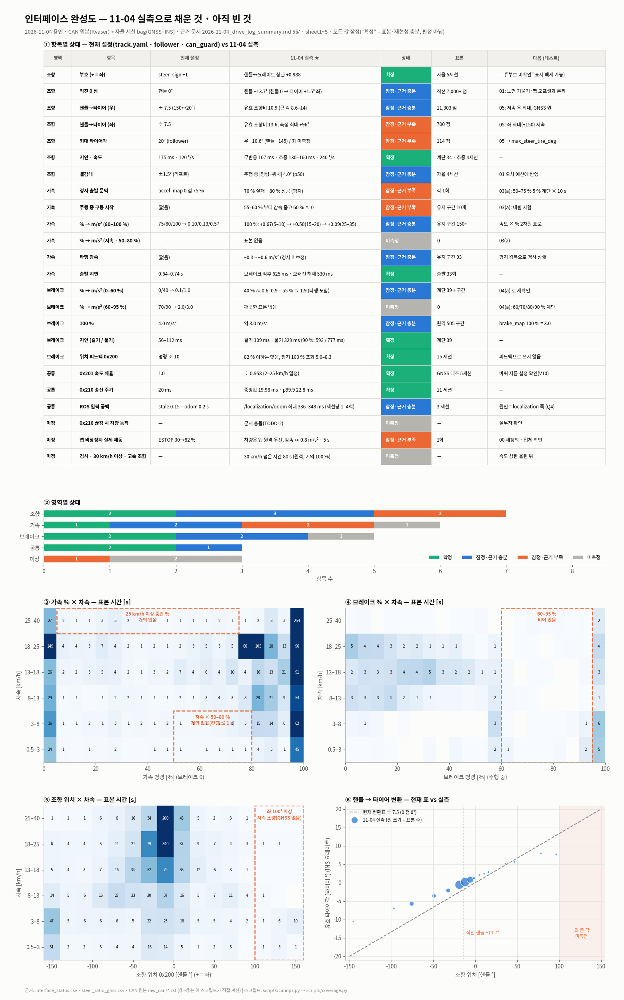
sheets/sheet0_interface_status.png(coverage.py).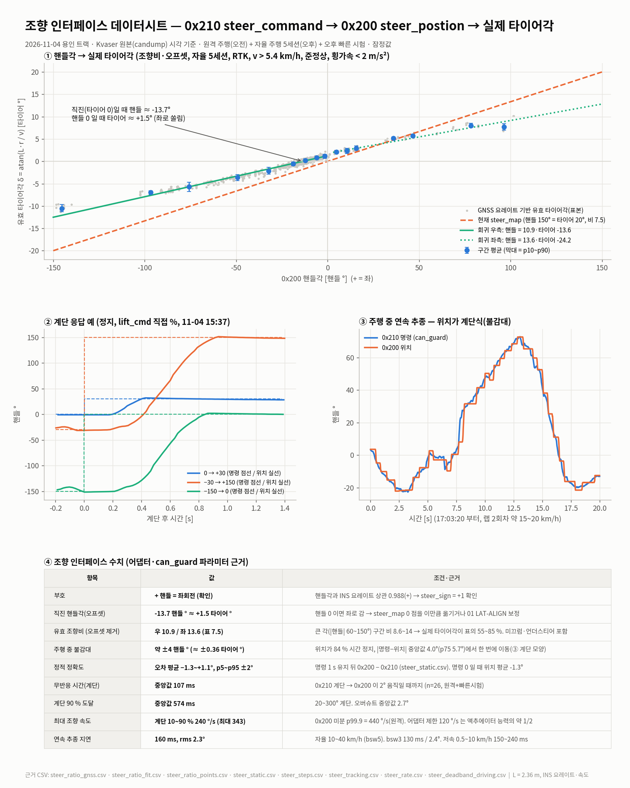
sheets/sheet1_steer.png.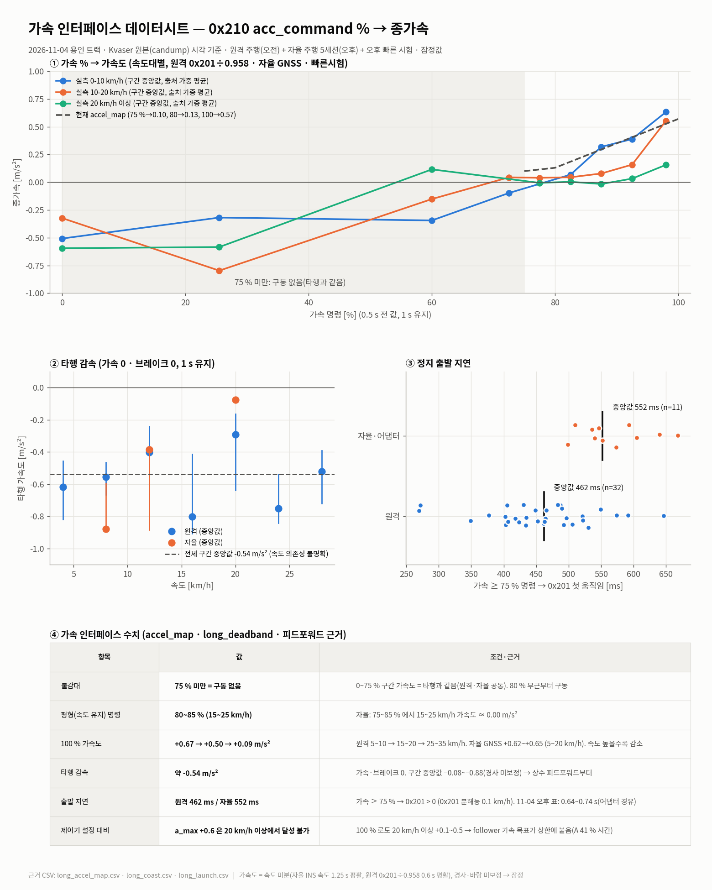
sheets/sheet2_accel.png.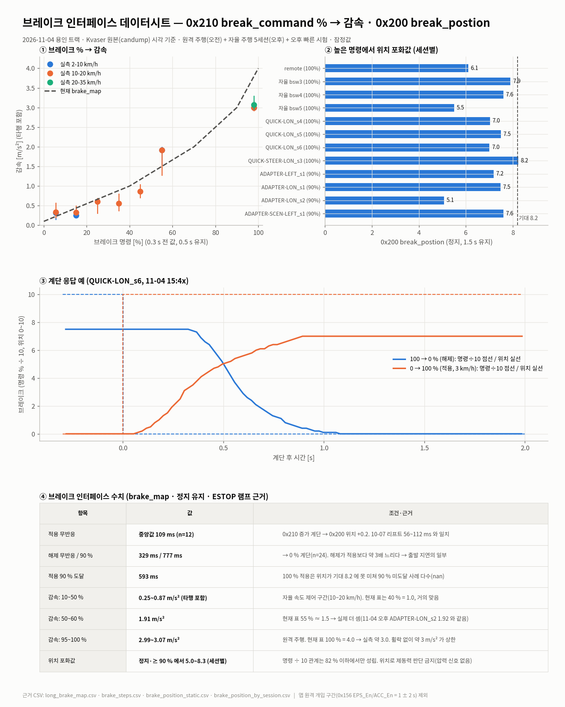
sheets/sheet3_brake.png.